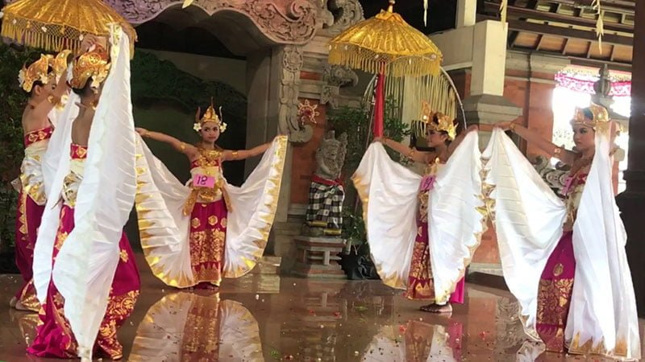

Tari Belibis
Tari Belibis adalah tari kreasi baru dari Bali yang masuk dalam kategori tari kelompok, karena melibatkan lebih dari tiga orang penari. Seni tari ini lahir ditahun 1984, koreografinya digarap oleh N.L.N Swasti Wijaya Bandem, sementara iringan musiknya diciptakan oleh I Nyoman Windha. Oleh karena lebih difungsikan sebagai hiburan, maka tari ini lebih menitikberatkan segi artistik, koreografi, serta disajikan dengan tema dan tujuan yang jelas.
Seperti diwakili oleh namanya, tari ini adalah sebuah penggambaran dari keindahan dan kecantikan sekelompok burung belibis yang sedang menikmati alam sekitar. Adapun temanya mengambil cerita Angklingdharma, mengenai kutukan terhadap raja Angklingdharma oleh istrinya yang sakti. Kisah yang ada dalam cerita Tantri tersebut, menyebutkan bahwa sang raja dikutuk menjadi seekor burung belibis.
Dikisahkan, raja Angklingdharma yang telah berubah menjadi burung belibis tersebut, kemudian mengembara dan bertemu sekelompok burung belibis lain. Merasa tertarik dengan suasana canda dan keriangan yang ada, ia pun berusaha bergabung agar diterima menjadi bagian dari kelompok tersebut.
Malangnya, oleh karena sang burung (Angklingdharma) mampu berbicara seperti manusia, burung-burung lain kemudian tahu bahwa ia adalah manusia yang dikutuk, sehingga mereka pun menolaknya. Selanjutnya, kawanan burung itu pun pergi dan meninggalkan sang raja dalam kesendirian.
<< Kembali